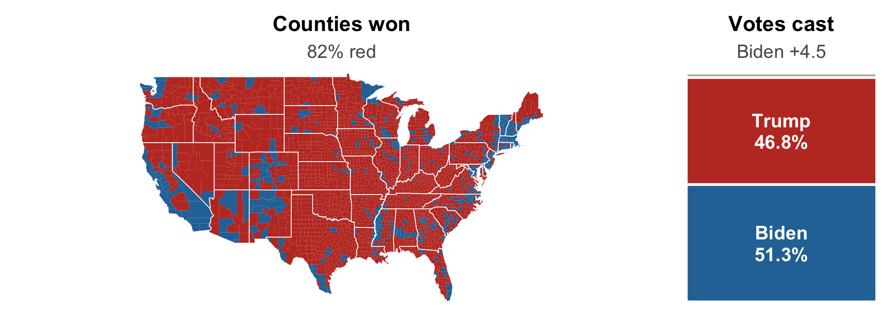
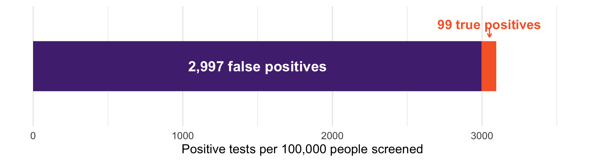

support <- c(0.60, 0.15, 0.10)
voters <- c(500000, 80000, 20000)
weights <- voters / sum(voters)
weights[1] 0.83333333 0.13333333 0.03333333Conditioning is the whole game
Last time: sample spaces, axioms, and counting
Today: Conditional Probability
Nearly every question you will ask as a social scientist is a conditional one. Today we learn how to reason about conditional probability.
Does a child attend college given a policy intervention?
Does hospitalization risk differ between vaccinated and unvaccinated people?
Do people vote more when told their turnout is visible to neighbors?
Does a résumé get a callback given the name at the top?
Unconditional: what is the probability of \(A\)?
Conditional: given that \(B\) happened, what is the probability of \(A\)?
If \(P(B) > 0\):
\[P(A \mid B) = \frac{P(A \cap B)}{P(B)}\]
How often \(A\) and \(B\) happen together, divided by how often \(B\) happens at all.
Conditioning shrinks the sample space. We are no longer asking about everyone -only about the \(B\) world.
Dividing by \(P(B)\) re-normalizes so the new, smaller world still sums to 1
A snapshot of a 100-seat chamber:
| Democrats | Republicans | Independents | Total | |
|---|---|---|---|---|
| Men | 33 | 40 | 2 | 75 |
| Women | 15 | 9 | 1 | 25 |
| Total | 48 | 49 | 3 | 100 |
Pick one senator at random. What is \(P(\text{woman} \mid \text{Democrat})\)?
\(P(\text{woman} \mid \text{Democrat}) = \dfrac{15/100}{48/100} = \dfrac{15}{48} = 0.31\)
We threw away 52 senators. The denominator is no longer 100 - it’s 48.
Now the other direction: \(P(\text{Republican} \mid \text{woman})\)?
\[\frac{9/100}{25/100} = \frac{9}{25} = 0.36\]
\(P(\text{woman} \mid \text{Democrat}) = 0.31\)
\(P(\text{Democrat} \mid \text{woman}) = 15/25 = 0.60\)
We met this in Week 2: “among Biden voters, 88% favor taxing the rich” is not “among supporters of taxing the rich, 88% voted for Biden”
Confusing the two is one of the most common errors in applied social science — and, as we will see today, in courtrooms and policy debates.
\(P(A \mid B)\) satisfies each axiom from last week
\(P(A \mid A) = 1\)
\(P(A^{c} \mid B) = 1 - P(A \mid B)\)
But be careful — the conditioning bar is not additive. Why is this false?
\[P(A \mid B \cup C) \neq P(A \mid B) + P(A \mid C)\]
The probability that both happen, written \(P(A \cap B)\) or \(P(A, B)\).
Rearranging the definition of conditional probability:
\[P(A, B) = P(A)\,P(B \mid A) = P(B)\,P(A \mid B)\]
Two ways to describe the same result
That symmetry is the basis of Bayes’ rule (coming later today)
Suppose we know candidate support in each city of a state. How do we get statewide support?
The cities form a partition: mutually disjoint events whose union is the whole sample space
If \(A_1, \ldots, A_k\) is a partition:
\[P(B) = \sum_{j=1}^{k} P(B \mid A_j)\, P(A_j)\]
In words: take the conditional probability in each piece, weight it by how big that piece is, and add up.
Three cities, with support for one candidate:
| City | \(P(\text{support} \mid \text{city})\) | Voters |
|---|---|---|
| Atlanta | 0.60 | 500,000 |
| Peachtree City | 0.15 | 80,000 |
| Helen | 0.10 | 20,000 |
Two of the three cities look bad. Is the candidate losing?
support <- c(0.60, 0.15, 0.10)
voters <- c(500000, 80000, 20000)
weights <- voters / sum(voters)
weights[1] 0.83333333 0.13333333 0.0333333352.3%. Two of three cities went against them and they still lead, because Atlanta is 83% of the electorate.
Averaging the three city rates gives \((0.60 + 0.15 + 0.10)/3 = 0.28\) — wrong by 24 points
The conditional probabilities were all correct. But, the weights matter.
This is exactly the error behind “I drove through the county and saw nothing but signs for the other guy.” Unweighted conditionals are not a population estimate.

Contiguous 48 shown. County returns: tonmcg/US_County_Level_Election_Results.
Trump carried 2,595 counties; Biden carried 557 — and won the popular vote by 4.5 points. It is a map of land, read as a map of people.
A choropleth gives every county the same visual weight per square mile
Los Angeles County has roughly 10 million residents. Several counties have fewer than a thousand. On the map, each is one patch.
The map shows \(P(\text{support} \mid \text{county})\) and hides \(P(\text{county})\) — the missing weight from the law of total probability. The map is the unweighted average.
The general lesson: group rates are not a population estimate until you weight them. Whenever anyone shows you rates by county, school, state, or country, ask: how big is each group?
You are a regulator. A firm brings you a screening test for a deadly cancer.
It detects the cancer 99% of the time when present
It has only a 3% false positive rate
They want you to approve it for routine population-wide screening
Those are genuinely good test characteristics. Do you approve it?
The question you have to answer is not “how good is the test?”
It is: if a random person screens positive, how likely are they to have the cancer?
To answer that you need one more number the sales rep did not give you - the base rate
Suppose prevalence is 1 in 1,000. That would make it a very common cancer.
Reverend Thomas Bayes (1701–1761), English minister and statistician.
If \(P(B) > 0\):
\[P(A \mid B) = \frac{P(B \mid A)\, P(A)}{P(B)}\]
It falls out of the joint probability identity: both \(P(A)P(B|A)\) and \(P(B)P(A|B)\) equal \(P(A,B)\), so set them equal and divide.
Usually we do not know \(P(B)\) directly, so we build it with the law of total probability:
\[P(A \mid B) = \frac{P(B \mid A)\, P(A)}{P(B \mid A)P(A) + P(B \mid A^{c})P(A^{c})}\]
\(P(A)\) is the prior - what we believed before the evidence
\(P(A \mid B)\) is the posterior - what we believe after
The denominator is just “all the ways \(B\) could happen”
prior <- 0.001 # P(cancer)
sens <- 0.99 # P(positive | cancer)
fpr <- 0.03 # P(positive | no cancer)
(sens * prior) / (sens * prior + fpr * (1 - prior))[1] 0.031976743.2%. A positive result on this excellent test means you probably do not have the disease.

Screen 100,000 people. Only 100 have the cancer, and the test finds 99 of them - but it also flags 3% of the 99,900 healthy people.
The test is applied to a huge healthy group and a tiny sick group
3% of an enormous number beats 99% of a very small one
This is the base rate fallacy: judging \(P(\text{disease} \mid +)\) by \(P(+ \mid \text{disease})\) and forgetting how rare the disease is
Note what this does not say. The test is not useless - it moved you from 0.1% to 3.2%, a thirtyfold update. It just is not a diagnosis.
Several states have required drug testing for public benefit applicants. Suppose 10% of applicants use drugs, and the test is 95% sensitive with a 5% false positive rate:
About 68%. Roughly three in ten people flagged would be false accusations.
Reported positive rates in real programs have been lower than this - which makes the arithmetic tough.
You cannot evaluate a screening policy without a base rate.
A murder is committed. Crime scene evidence shows the murderer has a blood type shared by 5% of the population. A suspect matches.
The prosecutor tells the jury this establishes a 95% chance the suspect is the murderer.
The 5% is \(P(\text{match} \mid \text{innocent})\)
The jury needs \(P(\text{innocent} \mid \text{match})\)
In a city of 1,000,000, roughly 50,000 people match
The evidence is real, but it is nothing like 95%. People have gone to prison over this exact confusion. [we should make law students take stats…]
COMPAS is a proprietary risk score used in bail and sentencing decisions across the United States. In 2016, ProPublica obtained scores for thousands of defendants in Broward County, Florida, and reported that the algorithm was racially biased.
ProPublica: among defendants who did not go on to reoffend, Black defendants had been flagged high risk at nearly twice the rate of white defendants
Northpointe (the vendor): among defendants flagged high risk, the reoffense rate was about the same regardless of race - the score means the same thing for everyone
Both claims are correct. ProPublica published the data, so we can verify both ourselves - and then prove that they had to disagree.
Broward County, 2013–14: everyone scored by COMPAS at pretrial, followed for two years. We keep the two groups the dispute was about.
compas <- read_csv("Data/compas-scores-two-years.csv", show_col_types = FALSE) |>
filter(race %in% c("African-American", "Caucasian")) |>
mutate(high_risk = score_text != "Low") # COMPAS decile score of 5+
compas |>
count(race, high_risk, rearrested = ifelse(two_year_recid == 1, "yes", "no")) |>
pivot_wider(names_from = rearrested, values_from = n, names_prefix = "rearrested_")# A tibble: 4 × 4
race high_risk rearrested_no rearrested_yes
<chr> <lgl> <int> <int>
1 African-American FALSE 990 532
2 African-American TRUE 805 1369
3 Caucasian FALSE 1139 461
4 Caucasian TRUE 349 505propublica/compas-analysis on GitHub, compas-scores-two-years.csv — the file behind the article.
rates <- compas |>
group_by(race) |>
summarise(base_rate = mean(two_year_recid),
fpr = mean(high_risk[two_year_recid == 0]), # P(flagged | not rearrested)
fnr = mean(!high_risk[two_year_recid == 1]), # P(not flagged | rearrested)
ppv = mean(two_year_recid[high_risk])) # P(rearrested | flagged)
rates# A tibble: 2 × 5
race base_rate fpr fnr ppv
<chr> <dbl> <dbl> <dbl> <dbl>
1 African-American 0.514 0.448 0.280 0.630
2 Caucasian 0.394 0.235 0.477 0.591ProPublica’s number is fpr, \(P(\text{flagged} \mid \text{not rearrested})\): 44.9% vs 23.5%. Its mirror is fnr: rearrested white defendants were labeled low risk almost twice as often, 47.7% vs 28.0%
Northpointe’s number is ppv, \(P(\text{rearrested} \mid \text{flagged})\): 63.0% vs 59.1%. Roughly equal - a flag is calibrated.
Both computed correctly, from the same table. Crucially: the base rates differ, 51.4% vs 39.4%. That difference is the key to understanding this.
Northpointe’s number is a posterior. Write Bayes’ rule for it, with the base rate \(p = P(\text{rearrested})\) as the prior:
\[\text{PPV} = P(\text{rearrested} \mid \text{flagged}) = \frac{(1-\text{FNR})\,p}{(1-\text{FNR})\,p + \text{FPR}\,(1-p)}\]
The numerator is the true positives; the denominator is everyone flagged — the law of total probability again
This is the cancer-screening formula relabeled: sensitivity \(= 1-\text{FNR}\), prior \(= p\).
The identity runs both ways. Cross-multiply and isolate FPR:
\[\begin{aligned} \text{PPV}\left[(1-\text{FNR})\,p + \text{FPR}\,(1-p)\right] &= (1-\text{FNR})\,p \\[2pt] \text{PPV} \cdot \text{FPR} \cdot (1-p) &= (1-\text{FNR})\,p\,(1-\text{PPV}) \\[2pt] \text{FPR} &= \frac{p}{1-p} \cdot \frac{1-\text{PPV}}{\text{PPV}} \cdot (1-\text{FNR}) \end{aligned}\]
Given a group’s base rate, calibration, and miss rate, the false positive rate is not a free design choice. It is already determined.
# A tibble: 2 × 6
race base_rate fpr fnr ppv fpr_check
<chr> <dbl> <dbl> <dbl> <dbl> <dbl>
1 African-American 0.514 0.448 0.280 0.630 0.448
2 Caucasian 0.394 0.235 0.477 0.591 0.235Exact in both groups, as it must be - this is accounting, not an assumption. The trap comes from reading it across groups.
Demand a “fair” algorithm: equal calibration (\(\text{PPV}_B = \text{PPV}_W\)) and equal miss rates (\(\text{FNR}_B = \text{FNR}_W\)). Divide one group’s identity by the other’s — everything cancels except the base rates:
\[\frac{\text{FPR}_B}{\text{FPR}_W} = \frac{p_B/(1-p_B)}{p_W/(1-p_W)} = \frac{0.514/0.486}{0.394/0.606} \approx 1.63\]
Even a perfectly calibrated score with equal miss rates would flag harmless Black defendants at 1.63 times the white rate. The observed gap is 1.9 times.
The only escapes are equal base rates or a perfect predictor. That is the point in Chouldechova (2017) and we just did the algebra.
Not an artifact of the High/Low cutoff: Kleinberg, Mullainathan, and Raghavan (2016) prove the same bind for continuous scores. (Statement only — that proof is beyond the scope of this course.)
No cleverer algorithm gets around this. It is arithmetic.
Every claim so far said reoffended. Look at what the variable actually is: two_year_recid - a new arrest within two years.
Arrest is not behavior. If one group is policed more heavily, its measured base rate rises even if underlying behavior were identical.
The base rate drives everything on the last three slides - the forced FPR gap is a gap in \(p\) as measured through policing
This is (in part) a measurement validity question. If the base rate difference is accurately reflecting behavior, Northpointe’s algorithm is not biased. If the groups are treated differently, it is biased.
The impossibility result is about the world as measured. As social scientists, we need to think through both the equations and the data generating process.
Both sides computed correctly from the same eight cells.
\(P(\text{flagged} \mid \text{not rearrested})\) what happens to people who are flagged?
\(P(\text{rearrested} \mid \text{flagged})\) what is a flag worth as evidence?
When base rates differ, no algorithm answers both symmetrically. Choosing is a normative decision, not a mathematical one!
Bail, lending, hiring, medical triage: every algorithmic fairness fight is an argument about which conditional probability matters.
We left this hanging last time. Paul went 8-for-8, which is \(1/256\) by chance.
Let \(A\) = “Paul is genuinely prophetic”
\(P(8\text{-for-}8 \mid A) = 1\)
\(P(8\text{-for-}8 \mid A^{c}) = 1/256\)
And the prior, \(P(A)\) = the base rate of psychic cephalopods
paul <- function(prior) prior / (prior + (1 - prior) * (1/256))
paul(1/100) # generous: 1 in 100 octopuses is psychic[1] 0.7211268[1] 0.2039841[1] 0.0002559347The evidence is identical in all three. The conclusion is differs based on our priors.
Eight correct picks is a huge update — a 1-in-1,000 prior becomes 1-in-5
But start from a sane prior about octopuses and Paul is still almost certainly just lucky
It is a rule for updating belief in light of evidence
Strong evidence cannot rescue an implausible hypothesis on its own
Bayes formalizes something we’ve already seen: how many chances did the world have?
This is also an entire branch of statistics. If it appeals to you, take a Bayesian course! (I don’t really consider myself a Bayesian, but they definitely have some good points)